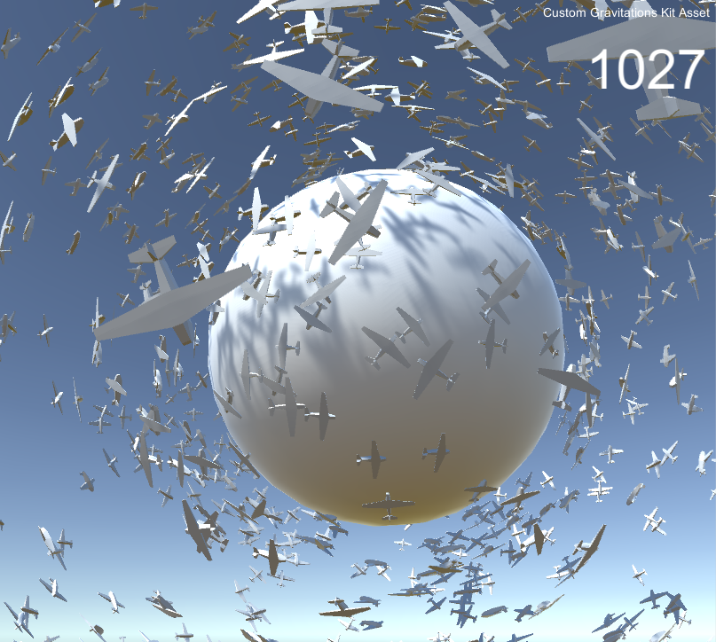

Custom Gravitations Kit
Unity asset for taking Gravity under control
Demo projects
Take Gravity under control with Custom Gravitations Kit - walk on planets, run on walls, create local gravitational fields, or even travel inside of spherical worlds. It is a toolkit which brings to life increadible ideas
Some useful links
- Custom Gravitations Kit website - Asset on Unity Asset Store - Support thread at Unity Forums - Demo video - Documentation
Demo projects
Walk On Planets Travel inside of Spherical World Angry Bots with CGK
Welcome
Demonstration Game
While we are launching you can try a Demo Game. Or enjoy a recorded gameplay bellow.
Thank you for your attention,
Paul Patico
Travel across planets
Here is another one way to use CGK. This pretty simple scene demontrate a case when player getting in the spaceship
and fly to another one tiny planet.
It this demo rocket uses AlignerComponent (from Custom Gravitations Kit) for controlling rotation and align themself along gravity vector.
Paul Patico
Old demo video
Just for the history. The most earliest video of CGK, released at May of 2014.
Paul Patico
Performance
During work on performance increase, I’ve made this scene with continiously inscreasing number of planes that flys in the gravitational field and aligns themselves along gravity vector.

Paul Patico
CGK 1.12 is going out!

It’s so beautiful day today, and I just sent new version of Custom Gravitational Kit to Asset Store reveiw.
Really hope, in the next 5-10 business days it will be available for everybody.
But anyway, I think now I can share what it will include.
New Features
- Added BaseCharacterController class - that can be used for implementing any own “gravity-affected” character controllers.
- Control of fluctuation power from inspector’s UI - any gravitational field can have small torque forces impacting on the objects, and now these forces could be tuned.
- ForceMode for gravitational fields. There was added 4 standart modes of gravity Force: Force, VelocityChange, Acceleration and Impulse. So, it can be confifured from UI now.
Some fixes
- CentricGravity with BoxCollider was breaking SceneView, now it’s fixed.
- Fixed non-working invert mouse option of First Person Camera view.
- Clean up and refactoring
Paul Patico
Tested with Unity Cloud Build
Latest build of asset was succesfully tested on:
- Unity 4.7 | Win 64/32 | Linux 64/32 | Mac 64/32 | Android |
- Unity 5.0 | Win 64/32 | Linux 64/32 | Mac 64/32 | Android |
- Unity 5.3 | Win 64/32 | Linux 64/32 | Mac 64/32 | Android |